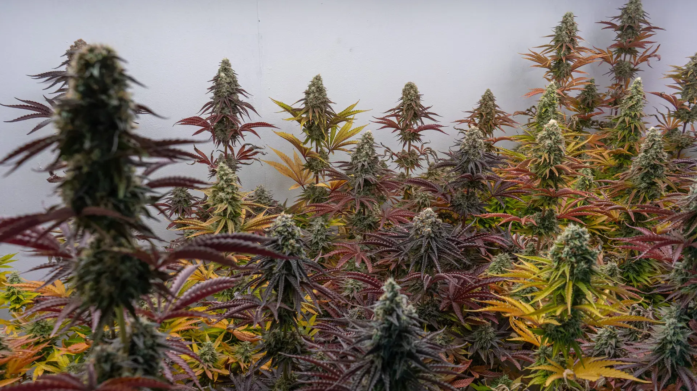
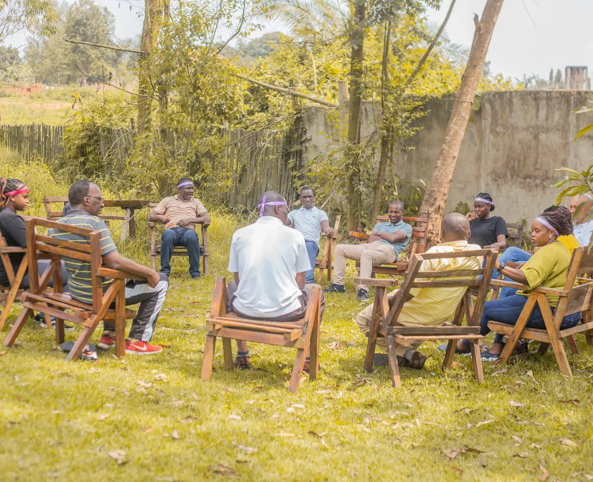
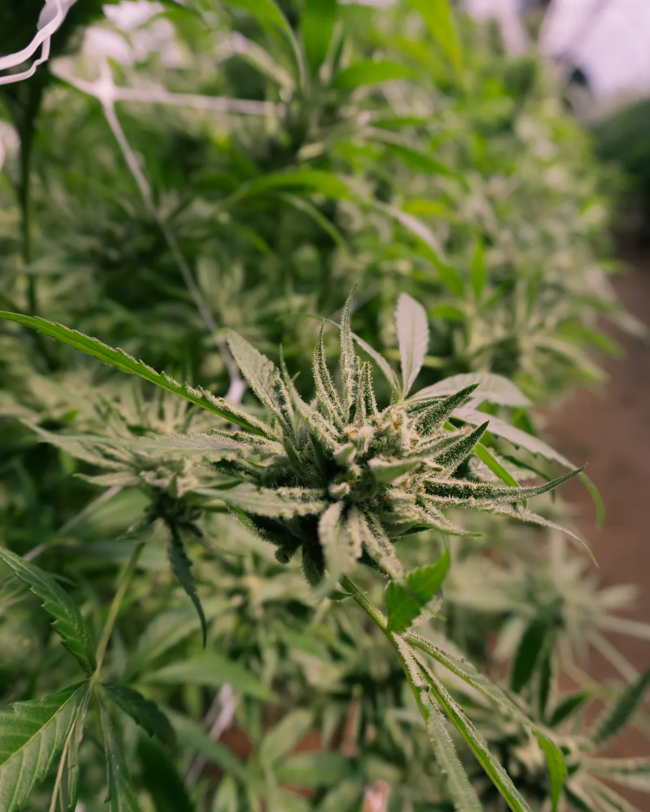
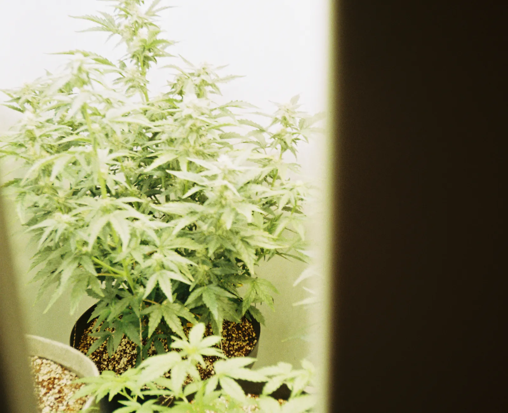
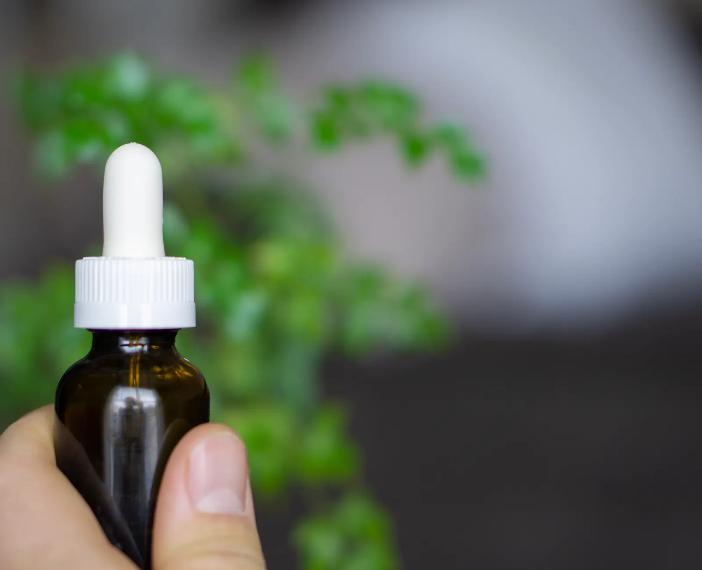
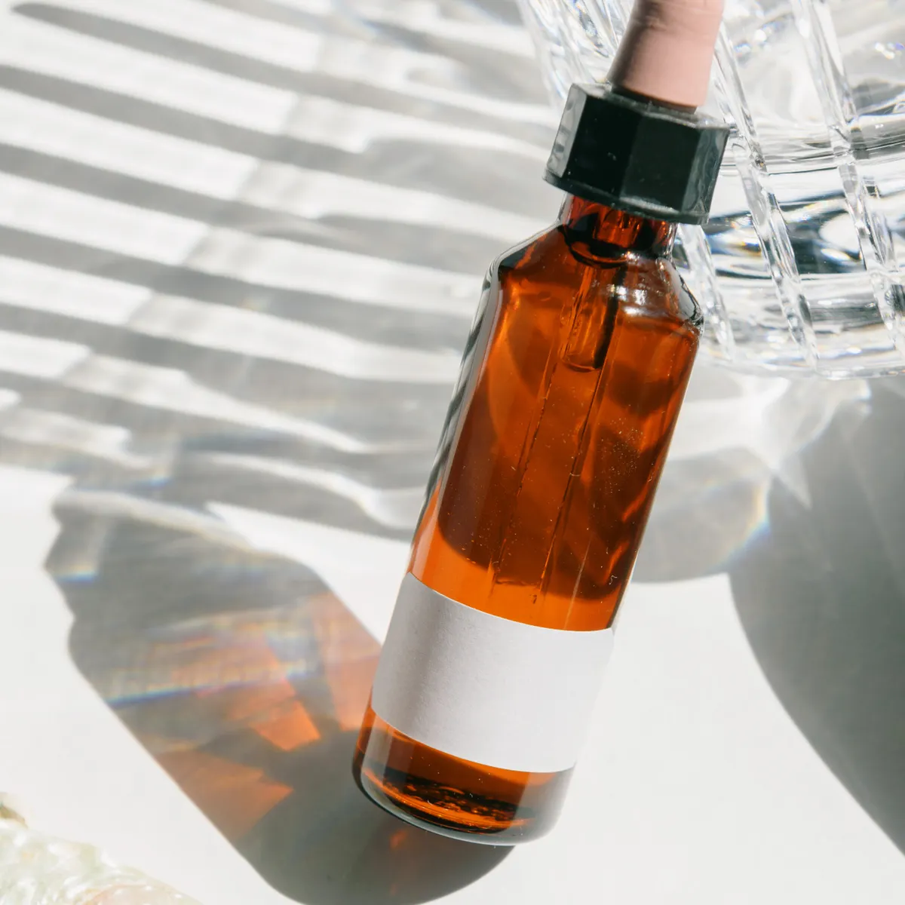
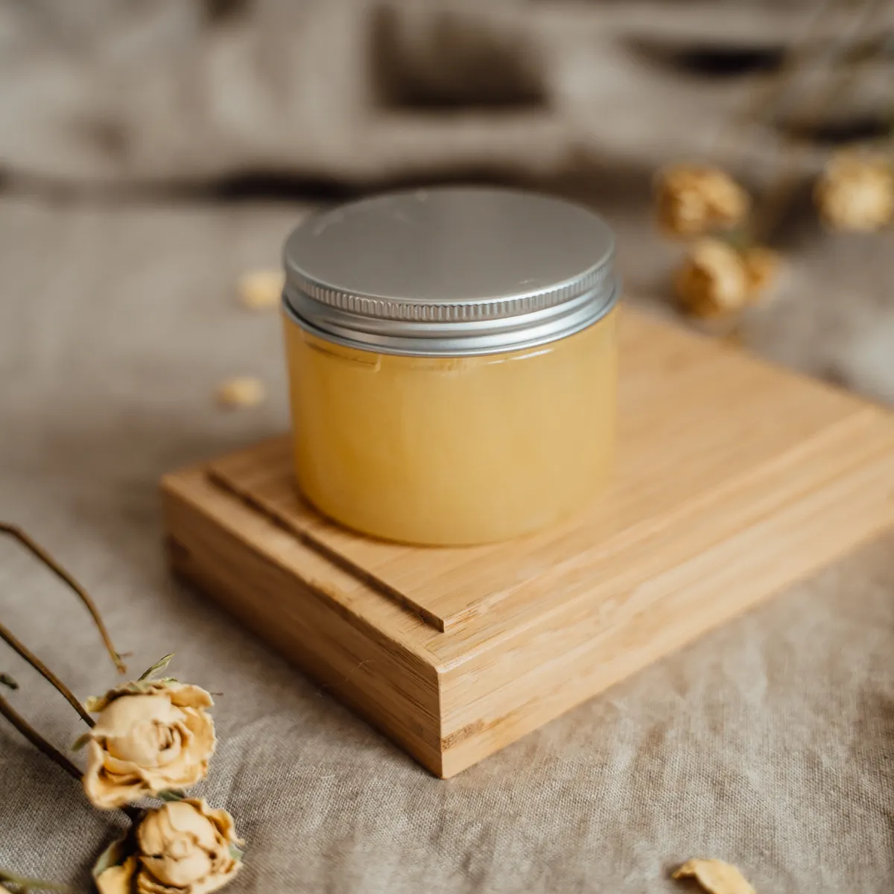
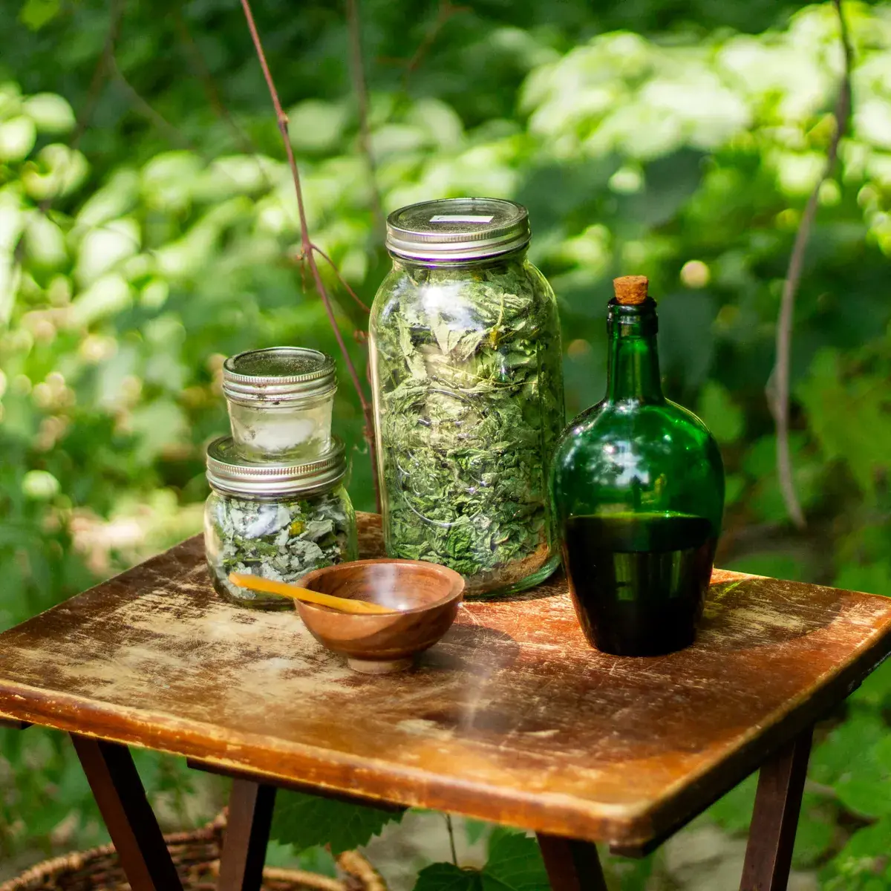
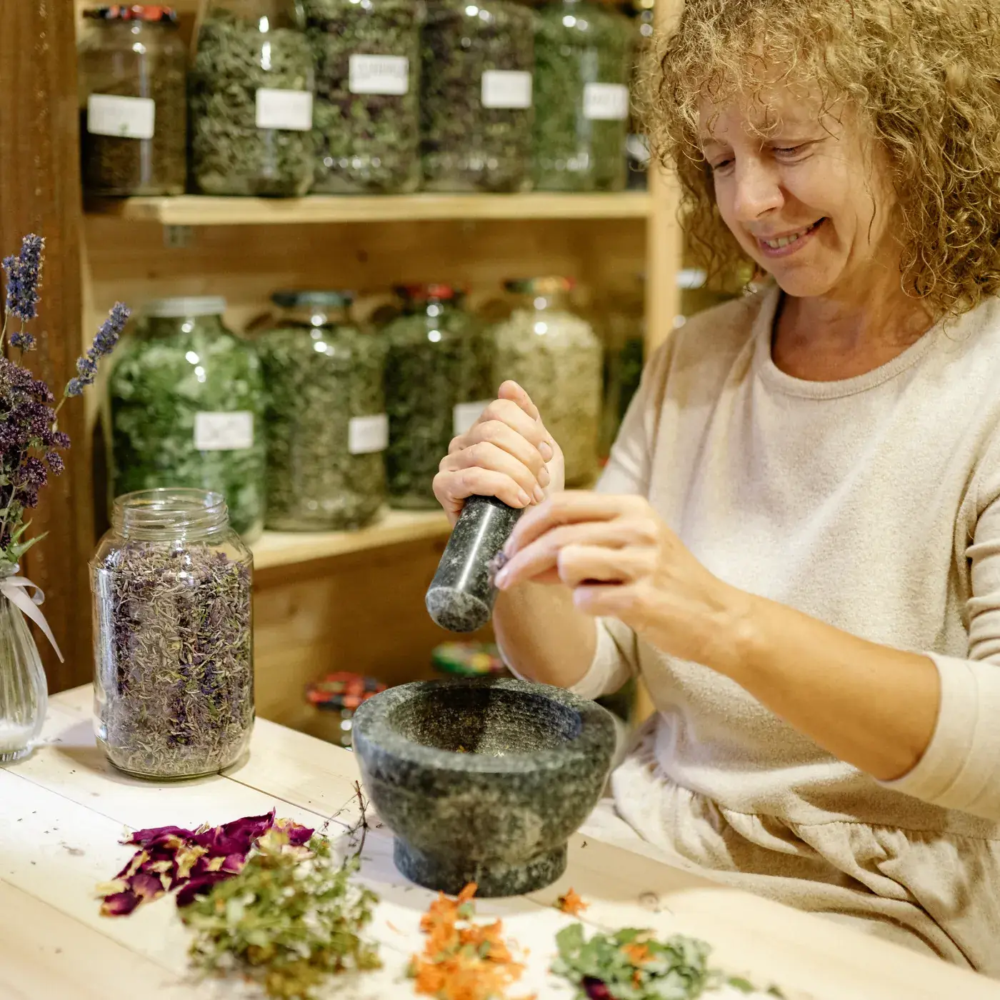

Acompañamiento en el REPROCANN
Revisamos juntos qué te falta: la indicación médica, el consentimiento, la cuenta de Mi Argentina y quién va a figurar como cultivador. Te avisamos paso por paso hasta que salga el certificado.
Hacer el chequeoAsociación civil sin fines de lucro · Leloir
Somos vecinas y vecinos organizados alrededor de una sala de cultivo. Ayudamos a entender el trámite, cultivamos para quienes no pueden hacerlo y compartimos lo que aprendimos en talleres abiertos.

Leloir CultivaCultivo solidario · Ley 27.350
Qué hacemos
Revisamos juntos qué te falta: la indicación médica, el consentimiento, la cuenta de Mi Argentina y quién va a figurar como cultivador. Te avisamos paso por paso hasta que salga el certificado.
Hacer el chequeoSi tenés indicación médica pero no podés cultivar, la asociación puede figurar como persona jurídica permitida y hacerse cargo del cultivo vinculado a tu trámite.
Ver cómo trabajamosTalleres de cultivo, de cosecha y de elaboración de preparados, pensados para quien nunca plantó nada y para quien ya viene cultivando y quiere hacerlo mejor.
Ver los talleresInformación general

Quiénes somos
Leloir Cultiva se organiza como asociación civil sin fines de lucro. Eso define todo lo demás: no vendemos al público, no hacemos publicidad de productos y lo que se produce va a las personas asociadas que tienen su autorización vigente.
Las decisiones se toman en asamblea y el cultivo se sostiene con el trabajo de quienes participan. Si querés sumarte, el primer paso es una charla para conocernos.

La ley y la planta
La Ley 27.350 regula la investigación médica y científica del uso medicinal de la planta de cannabis. A partir de ella funciona el REPROCANN, que registra a quienes reúnen las condiciones para acceder a un cultivo controlado con fines de tratamiento medicinal, terapéutico o paliativo del dolor.
El uso concreto lo define siempre un profesional de la salud: es él quien evalúa, indica y hace el seguimiento. Desde 2020, además, hay en el país un producto registrado a base de cannabidiol para encefalopatías epilépticas.
Esta información es general y no reemplaza la consulta médica.
Cómo acompañamos
La mayoría llega con la misma duda: ya tiene la indicación pero no sabe cómo seguir. Ahí entramos nosotros: ordenamos los papeles, explicamos qué rol te conviene declarar y, si hace falta, quedamos vinculados como cultivadores de tu trámite.
El profesional que firma tiene que estar registrado en el REFEPS, tener formación acreditada en cannabis medicinal y firma digital. Si todavía no tenés a quién consultar, te contamos cómo buscar uno.
Nadie debería tener que elegir entre cumplir la ley y cuidar su salud.

En la sala
Cada planta está asociada a una persona y a una autorización. Se riega, se poda y se registra: sabemos de qué genética viene y a qué trámite responde.
Consultar por el cultivo
En tu casa
La flor se seca, se cura y se convierte en el preparado que indicó tu profesional. Sale de la sala con el rótulo puesto y la autorización al día.
Consultar por los preparados9plantas en floración autorizadas por paciente
Preparados
No hay venta al público. Cada preparado se entrega a personas asociadas con REPROCANN vigente y según la indicación de su profesional de la salud.

Gotero de 30 ml
Extracción en aceite vegetal con flores de nuestro cultivo, en la proporción que figura en la indicación y rotulado con su lote.
Consultar por este preparado
Pote de 60 g
Base de cera y aceites vegetales para aplicación local sobre piel sana. Se elabora en tandas chicas.
Consultar por este preparado
A pedido
Preparaciones que armamos caso por caso cuando la indicación pide otro formato o concentración.
Consultar por este preparado
Los encuentros son en la sala de Leloir y los cupos se arman por WhatsApp.
Talleres y cursos
Sustrato, riego, luz y ciclo completo hasta la floración. Pensado para quien nunca plantó y quiere arrancar sin romper nada.
Quiero anotarmeCuándo cortar, cómo secar sin perder la flor y qué mirar durante el curado. Se hace en temporada, con material de la sala.
Quiero anotarmeExtracción en frío, filtrado, envasado y rotulado. Cada participante se lleva lo que preparó y la ficha del procedimiento.
Quiero anotarmeRecorremos el trámite en pantalla: los cinco roles, el consentimiento, la vinculación del cultivo y los errores que más rebotan.
Quiero anotarmeREPROCANN
El Registro del Programa de Cannabis del Ministerio de Salud de la Nación. Registra a quienes reúnen las condiciones para acceder a un cultivo controlado con fines medicinales, terapéuticos o paliativos del dolor, y termina con un certificado de cultivo autorizado.
Necesitás indicación médica de un profesional habilitado, firmar el consentimiento informado y la declaración jurada, y tener cuenta validada en Mi Argentina. El paciente inicia el trámite y el profesional adjunta la documentación y vincula el cultivo.
Te decimos qué te falta antes de que empieces, te acompañamos mientras el trámite está en curso y, si corresponde, quedamos vinculados como persona jurídica permitida para cultivar lo tuyo.
Chequeo rápido
Dejanos tus datos y te contactamos para ordenar el trámite. Si ya tenés la indicación, contanos de qué profesional es y avanzamos más rápido.
También podés escribirnos directo al +54 9 11 5886-1705.
Dudas frecuentes
Las respuestas siguen lo que publica el propio Programa. Si algo no está acá, preguntanos por WhatsApp y lo averiguamos.
Es el Registro del Programa de Cannabis del Ministerio de Salud de la Nación. Registra a las personas que reúnen las condiciones para acceder a un cultivo controlado de cannabis con fines de tratamiento medicinal, terapéutico o paliativo del dolor. El trámite termina con un certificado de cultivo autorizado.
No. La inscripción no tiene costo alguno por parte del Ministerio de Salud de la Nación. Lo que sí puede tener costo es la consulta con el profesional que hace la indicación.
Hasta 9 plantas en floración por paciente.
Tres años para el autocultivo y un año para las asociaciones civiles y fundaciones. No hay renovación automática: una vez vencida, el trámite se hace de nuevo desde el principio.
Sí. Al hacer el trámite podés vincular a un tercero cultivador o a una persona jurídica permitida, como una asociación civil orientada al cultivo de cannabis para uso medicinal.
La autorización implica poder transportar hasta 40 gramos de flores secas o 6 unidades de goteros de 30 ml.
Cualquier profesional de la medicina registrado en la Red Federal de Registros de Profesionales de la Salud (REFEPS), con formación académica acreditada en cannabis medicinal y firma digital registrada ante el Ministerio de Salud de la Nación.
Leloir Cultiva
Contestamos consultas sobre el trámite, sobre los talleres y sobre cómo asociarte. Si ya tenés tu autorización, contanos y coordinamos una charla.
Leloir, Ituzaingó · Zona oeste del Gran Buenos Aires